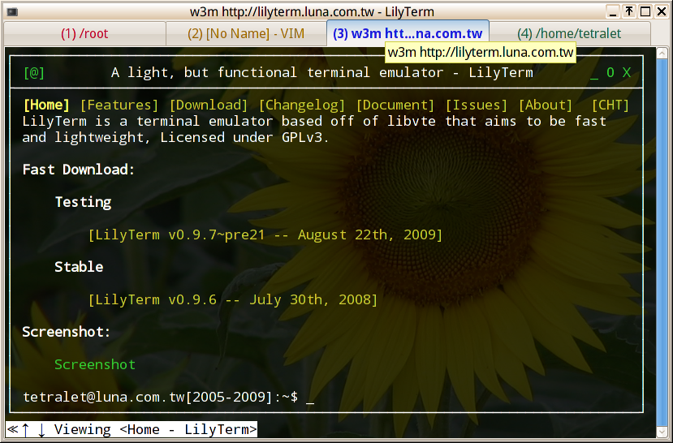

利用 Autotools 來建立 Makefile 檔案
在上一個章節中，我們展示瞭如何利用 Makefile 來做為編譯軟體時的輔助工具。但在實務上，因為每個人的環境多多少少有些不同，Makefile 往往得隨之修改才能順利進行編譯，這其實還是不夠人性化。同時，Makefile 對於大部份的人而言和外星文也差不多，要求人們自行修改 Makefile 以符合自己系統的需求未免太強人所難。為瞭解決這些問題，能依據各個系統之不同而自動建立 Makefile 檔的工具 － autoconf 及 automake 就順應而生了。
autoconf 及 automake 會依據程式開發者的設定來自動產生 configure、config.h.in 及 Mackfile.in 檔，而使用者則只要執行 configure 這個 Script 就能自動產生適合其系統的 Makefile 及 config.h 了；而有了適切的 Makefile 及 config.h，那麼接下來的編譯工作將會輕鬆許多。而以上就是著名的 [./configure]、[make]、[make install] 三部曲。雖然乍聽之下，就可以猜出來事情一定不會那麼簡單，但只要依以下步驟進行，其實也不會複雜到哪裡去。
範例程式
以下是我們在本文中所採用的範例程式，LilyTerm：
其檔案結構如下：
.
|-- AUTHORS
|-- COPYING
|-- ChangeLog
|-- INSTALL
|-- NEWS
|-- README
|-- TODO
|-- data
| |-- lilyterm.desktop
| |-- lilyterm.png
| |-- lilyterm.rc
| `-- lilyterm.xpm
|-- po
| |-- lilyterm.pot
| `-- zh_TW.po
`-- src
|-- Makefile
|-- dialog.c
|-- dialog.h
|-- main.c
|-- main.h
|-- menu.c
|-- menu.h
|-- notebook.c
|-- notebook.h
|-- page.h
|-- profile.c
`-- profile.h
我們將會展示如何利用 autoconf 和 automake 所提供的工具來替 LilyTerm 產生適切的 configure、config.h.in 和 Makefile.in 檔。雖然根據本文所提供的資訊可能還不足以應付一些複雜的大型程式，但只要能掌握基本法則，剩下的就應該不難克服了。
需事先安裝套件
由於本文主角是 autoconf 和 automake，所以請事先安裝這兩個套件。例：
aptitude install autoconf automake
而 aptitude 應該會在安裝這兩個套件的同時自動把一些相關的套件也安裝進系統裡。
但請注意到，autoconf 和 automake 在可攜性及可用性上下足了苦心：使用者並不需要在系統裡安裝 autoconf 和 automake 及其相關套件就能利用 configure 來產生適切的 Makefile 檔，因為 configure 使用的是標準的 shell 語法。而這也是 autoconf 和 automake 大受開發者歡迎的原因之一。
AutoTools 流程圖
由於 automake 及 autoconf 在使用時其步驟頗為繁雜，在閱讀本文的過程中若能同時參考以上流程圖將有助於瞭解 automake 及 autoconf 的運作流程。
建立 configure.ac
configure 是用來檢查系統環境並決定一些編譯參數及最終檔案的擺放位置等等的一個 Shell Script 檔。如果您查看 configure 的內容，您會發現它真的不像是人類的語言，因為它是由 autoconf 參考 configure.ac 的內容搭配為數眾多的 M4 巨集自動產生的，而產生 configure 的基本步驟如下：
執行 autoscan
請在程式的主目錄執行 autoscan 來產生 configure.scan 檔案。這個檔案將會被我們用來做為 configure.ac 的藍本。請將 configure.scan 重新命名為 configure.ac 並進行下一步：
autoscan 還會產生一個 autoscan.log 檔案以記錄 autoscan 的掃瞄過程。這個檔案可以放心得刪除。
autoscan
mv configure.scan configure.ac
編輯 configure.ac
configure.ac 是一個使用 Shell 語法及 M4 巨集指令的 Script 檔案，在產生 configure 的過程中它可是扮演著舉足輕重的角色：唯有經過適當配置的 configure.ac 才能產生合適的 configure，而 configure 則是 Makefile 成敗的關鍵。所以如何設定 configure.ac 就成為本文最重要的主題了。
另外，舊版的 autoconf 在此是使用 configure.in（而不是 configure.ac）。但因為 *.in 表示將會被 configure 處理的檔案，所以建議改用 configure.ac 以避免混淆。
基本語法：
由於 autoconf 主要是使用 M4 巨集指令來產生 configure 的，所以在 configure.ac 裡所有使用 M4 巨集的參 數都必須依照 M4 的語法，以 [ ] 及 , 做 為區隔字元。例：
pkg_modules="gtk+-2.0 >= 2.12.0 glib-2.0 gdk-pixbuf-2.0"
PKG_CHECK_MODULES(PACKAGE, [$pkg_modules])但若無混淆之虞時，像是所傳遞的參數裡沒有 ","，則 [ ] 可以省略不加。
而若傳遞的參數裡也有 [ ] 的話，為了避免混淆，請將整個參數以 [[ ]] 包起來。但若所傳遞的參數為說明文字的話，則不可以使用 [[ ]]，否則可能會產生不可預期的結果。
但若有些參數為空字串時，我們可以直接以 , 區 隔：
AC_CHECK_HEADERS([main.h],,,) 或乾脆省略：
AC_CHECK_HEADERS([main.h]) 另外還有一些小細節要注意的：
M4 巨集指令和它的左捌號 ( 之間請不要加空白，以免產生無法預期的後果。
以 # 或 dnl 開頭的則為註解。# 為 Shell 語法，而 dnl 語法則用於 M4 巨集。
下文中會介紹一些常用的 M4 巨集。其中，AM_* 的是 automake 相關巨集，而 AC_* 的則為 autoconf 相關巨集。
請多多參考其它自由軟體專案所附帶的 configure.in 或 configure.ac， 應可有助於瞭解該如何編寫更完善的 configure.ac。
範本，以 LilyTerm 為例：
以下為 LilyTerm 的 configure.ac 修改之後的最終結果：（紅色表示需手動編輯）
# -*- Autoconf -*-
# Process this file with autoconf to produce a configure script.
# autoconf 版本資訊
AC_PREREQ(2.61)
# 初始化 autoconf
AC_INIT(LilyTerm, 0.8.3, tetralet@gmail.com)
# 指定和 automake 搭配運作
AM_INIT_AUTOMAKE
# 檢查 src 目錄
AC_CONFIG_SRCDIR([src/main.c])
# 指定要產生 config.h
AC_CONFIG_HEADERS([config.h])
# Checks for programs.
AC_PROG_CC
AM_PROG_CC_C_O
# Checks for libraries.
# 檢查系統是否有安裝相關的函式庫
AM_PATH_GTK_2_0(2.12.0,,AC_MSG_ERROR([You need Gtk+ >= 2.12.0 to build $PACKAGE]))
AM_PATH_GLIB_2_0(2.14.0,,AC_MSG_ERROR([You need Glib >= 2.14.0 to build $PACKAGE]))
PKG_CHECK_MODULES(vte, [vte >= 0.16.12],, AC_MSG_ERROR([You need libvte >= 0.16.12 to build $PACKAGE]))
AC_SUBST(CFLAGS, [$vte_CFLAGS])
AC_SUBST(LDFLAGS, [$vte_LIBS])
AC_CHECK_LIB([c],[setlocale],,AC_MSG_ERROR([You need libc6 (setlocale) to build $PACKAGE]))
AC_CHECK_LIB([c],[strlen],,AC_MSG_ERROR([You need libc6 (strlen) to build $PACKAGE]))
AC_CHECK_LIB([c],[atof],,AC_MSG_ERROR([You need libc6(atof) to build $PACKAGE]))
# 開啟/關閉某些功能
AC_ARG_ENABLE(hints, AC_HELP_STRING([--enable-hints], [turn on window hints]), AC_DEFINE(HINTS,, [turn on hints]))
AC_ARG_ENABLE(debug, AC_HELP_STRING([--enable-debug], [turn on debug]), CFLAGS="$CFLAGS -g")
PKG_CHECK_EXISTS(gtk+-2.0 >= 2.10.0, AC_DEFINE(ENABLE_TAB_REORDER,, [Define only if gtk+-2.0 >= 2.10.0.]))
# L10N 相關
AC_PROG_INTLTOOL
ALL_LINGUAS="zh_TW"
GETTEXT_PACKAGE="$PACKAGE"
AC_SUBST(GETTEXT_PACKAGE)
AM_GLIB_GNU_GETTEXT
AM_GLIB_DEFINE_LOCALEDIR(LOCALEDIR)
# Checks for header files.
AC_HEADER_STDC
AC_CHECK_HEADERS([locale.h stdlib.h string.h])
# Checks for typedefs, structures, and compiler characteristics.
AC_C_CONST
AC_TYPE_PID_T
# Checks for library functions.
AC_CHECK_FUNCS([setlocale])
# 指定要產生的檔案
AC_CONFIG_FILES([
Makefile
src/Makefile
po/Makefile.in
data/Makefile
])
AC_OUTPUT其中的重要語法及巨集指令將會在下文中解釋。
版本資訊：
AC_PREREQ(2.61) 表示這個檔案是由 autoconf 2.6.1 所產生的。
初始化資訊：（必要資訊，且必須是第一個呼叫的 M4 巨集）
AC_INIT(FULL-PACKAGE-NAME, VERSION, [BUG-REPORT-ADDRESS], [PACKAGE_TARNAME]) 請將其中的替換成以下資訊：若同時在 configure.ac 中也設定了 AC_CONFIG_HEADERS（請參考下一節《定義產生 configure 時所需的 config.h 檔案》中的說明）， 以上這些參數會在 configure 的過程中寫入 config.h 裡。因此，我們可以利用以下語法（像是寫在 main.h 裡）讓 config.h 的內容也能於程式內部使用：
FULL-PACKAGE-NAME：套件的完整名稱。如果在此有包含空白或其它可能不合法字元，請記得加上第 4 個參數。
VERSION：目前的版本號碼。
BUG-REPORT-ADDRESS：錯誤回報的電子郵件位址。可忽略不填。
- PACKAGE_TARNAME：傳給 AM_INIT_AUTOMAKE 作為 tarball 的名稱。可忽略不填。
不過，在同目錄下不能有 config.h 檔案，否則在 make 之時將會參考到同目錄下的 config.h（而不是主目錄下的 config.h）因而導致預期之外的結果。
#ifdef HAVE_CONFIG_H
# include "config.h"
#endif執行建立 Mackfile.in 時所需巨集
一般而言，Makefile.in 可經由手動編 輯，或是由 automake 參考 configure.ac 及 Makefile.am 的內容來自動產生。而使用 automake 來產生 Makefile.in 當然是比較理想的作法。但若想要讓 configure.ac 能和 automake 搭配使用，您必須在 configure.ac 裡加入如下一行，要求在產生 Makefile 之前能先執行一些必要的巨集：
AM_INIT_AUTOMAKE([OPTIONS]) 其中的 [OPTIONS]（以空白分隔）為要傳給 automake 的參數。這些參數會放在 AUTOMAKE_OPTIONS 裡傳給所有的 Makefile.am 檔。
註： AM_INIT_AUTOMAKE(PACKAGE, VERSION, [NO-DEFINE]) 是較舊的寫法，因為在 AC_INIT 裡已定義這些資訊了。 檢查原始碼目錄：
AC_CONFIG_SRCDIR([src/main.c]) 安全檢驗：autoconf 會檢查此檔案來確認該目錄是否存在。在此可任意使用該目錄中的某個檔案作為代表。
定義產生 configure 時所需的 config.h 檔案：
AC_CONFIG_HEADERS([config.h]) 它會收集在原始程式碼裡使用 #define 所定義的前置處理常數，並寫入指定的檔案中，（在此為 config.h），以便於讓 autoheader 處理。一般而言應該不要去更改這個設定值。
另外，提供類似功能的 AC_CONFIG_HEADER 以及 AM_CONFIG_HEADER 現已廢棄不再使用了。
檢查程式：
若您的程式需要一些特定程式，如：perl，才能正確編譯，那麼可以利用以下指令檢查在 $PATH 中是否有這麼一個指令（在本例中則不需要）：
另外，autoconf 還內建了一些巨集，像是 AC_PROG_INSTALL（指定用來安裝檔案的 install 指令）或是 AC_PROG_RANLIB（指定用來建立 static lib (*.a) 的 ranlib 指令），若您的程式需要這些指令才能正確編譯，請務必將其加到 configure.ac 裡，否則編譯很可能會失敗。
AC_CHECK_PROG(HAVE_PERL, perl,, C_MSG_ERROR([You need perl to build $PACKAGE])) 檢查相關函式庫：
對於 configure.ac 而言，它有一個很重要的使命，便是檢查系統裡是否有安裝了編譯該軟體時所需的函式庫。其檢查的語法如下：
AC_CHECK_LIB， 檢查函式庫所提供的功能：PKG_CHECK_MODULES 及 PKG_CHECK_EXISTS，檢查套件名稱及版本：
AC_CHECK_LIB(LIBRARY, FUNCTION, [ACTION-IF-FOUND],
[ACTION-IF-NOT-FOUND], [OTHER-LIBRARIES])
PKG_CHECK_MODULES(VARIABLE-PREFIX, MODULES,
[ACTION-IF-FOUND], [ACTION-IF-NOT-FOUND])
PKG_CHECK_EXISTS(MODULES,
[ACTION-IF-FOUND], [ACTION-IF-NOT-FOUND])但很多常見的函式庫裡會有一些事先寫好的 M4 巨集指令，我們可以直接採用這些指令而不必再去傷腦筋這些指令該怎麼寫了。
以 LilyTerm 為例，我們可以查看它的 *.h 檔案，然後將它所需引入的函式庫整理如下：也因此，我們可以發現我們需要安裝的套件如下：（可利用 dpkg -S glib/gi18n.h 之類的指令來尋找）
#include <gdk/gdkkeysyms.h>
#include <glib/gi18n.h>
#include <gtk/gtk.h>
#include <locale.h>
#include <stdlib.h>
#include <string.h>
#include <vte/vte.h>我們可以利用 dpkg 指令試著找找看該套件是否有提供 M4 巨集指令可以直接取用：
libgtk2.0-dev
libglib2.0-dev
libc6-dev
libvte-dev我們查看 /usr/share/aclocal/gtk-2.0.m4 的內容，發現它有如下的註解：
dpkg -L libgtk2.0-dev | grep m4
/usr/share/aclocal/gtk-2.0.m4因此我們可以在 configure.ac 中這麼寫：
dnl AM_PATH_GTK_2_0([MINIMUM-VERSION,
[ACTION-IF-FOUND [, ACTION-IF-NOT-FOUND [, MODULES]]]])而 libglib2.0-dev 也有提供類似的 M4 巨集指令，於是依樣畫葫蘆如下：
AM_PATH_GTK_2_0(2.12.0,,
AC_MSG_ERROR([You need Gtk+ >= 2.12.0 to build $PACKAGE]))但 libvte-dev 就沒有提供任何的 M4 巨集指令 可供直接取用，所以我們只好採用標準的 PKG_CHECK_MODULES 語法：
AM_PATH_GLIB_2_0(2.14.0,,
AC_MSG_ERROR([You need Glib >= 2.14.0 to build $PACKAGE]))
PKG_CHECK_MODULES(vte, [vte >= 0.16.12],,
AC_MSG_ERROR([You need libvte >= 0.16.12 to build $PACKAGE]))在上例中的 PKG_CHECK_MODULES 將會根據所傳入的 vte 模組而回傳 vte_CFLAGS 及 vte_LIBS 這兩個參數。為了讓程式能順利編譯，在此我們還得將 CFLAGS 及 LDFLAGS 設定為這兩個參數：
AC_SUBST(CFLAGS, [$vte_CFLAGS])
AC_SUBST(LDFLAGS, [$vte_LIBS])在此透過了 AC_SUBST 函數讓之後的程式能 存取到 $CFLAGS 及 $LDFLAGS，否則在之後的 make 過程中將會因找不到 libvte 而出現錯誤訊息並停止編譯。
另一個類似的常用的函數為 PKG_CHECK_EXISTS，它提供了和 PKG_CHECK_MODULES 類似的功能，但不會回傳任何參數或顯示錯誤訊息。例如，LilyTerm 裡有部份的功能僅適用於 gtk+ 2.10 版以上，我們可以利用這個函數來進行檢查：
PKG_CHECK_EXISTS(gtk+-2.0 >= 2.10.0,
AC_DEFINE(ENABLE_TAB_REORDER,, [Define only if gtk+-2.0 >= 2.10.0.]))其中，AC_DEFINE 巨集是要求把 ENABLE_TAB_REORDER 參數也寫入 config.h 中，讓原始程式也可以存取到這個參數。請參考下一節《開啟/關閉程式功能》中的說明。
有關於 PKG_CHECK_MODULES 及 PKG_CHECK_EXISTS 的使用方法請 man pkg-config 以取得更詳盡的資訊。
而 libc6-dev 也沒有提供及任何的 M4 巨集指令 可供直接取用，在此我們採用了 AC_CHECK_LIB 語法以作為示範：
AC_CHECK_LIB([c],[setlocale],,AC_MSG_ERROR([You need libc6 (setlocale) to build $PACKAGE]))
AC_CHECK_LIB([c],[strlen],,AC_MSG_ERROR([You need libc6 (strlen) to build $PACKAGE]))
AC_CHECK_LIB([c],[atof],,AC_MSG_ERROR([You need libc6(atof) to build $PACKAGE]))不過似乎很少人在檢查系統裡是否有安裝 libc 的？
開啟/關閉程式功能：
我們可以在程式碼裡使用了像是 #if、#elif、#ifdef 及 #ifndef 等等的條件編譯語法來開啟或關閉程式的某些功能，而這些選項可以寫入 configure.ac 裡，讓使用者在執行 configure 時可決定是否要開啟這些功能。
首先，請使用 ifnames 來檢查檔案裡使用了哪些條件編譯語法，例：
然後，使用 AC_ARG_ENABLE 來設定開啟或關閉該功能，其語法如下：
# ifnames src/*.c
HINTS src/config.c src/notebook.c
ENABLE_TAB_REORDER src/notebook.
AC_ARG_ENABLE(FEATURE, HELP-STRING,
[ACTION-IF-GIVEN], [ACTION-IF-NOT-GIVEN])其中的 [ACTION-IF-GIVEN] 及 [ACTION-IF-NOT-GIVEN] 可用 Shell 語法或 M4 巨集指令。
以 LilyTerm 為例，它可以在編譯時加上 HINTS 這個參數來啟用 hints 功能。那麼我們可以這樣寫：或者，我們可以在編譯時加上 -g 參數，以便能用 gdb 來進行除錯：
AC_ARG_ENABLE(hints,
AC_HELP_STRING([--enable-hints], [Turn on window hints]),
AC_DEFINE(HINTS,, [Turn on window hints]))而 AC_ARG_ENABLE 在處理時，可將結果作為參數放在 enableval 以及 enable_feature 裡傳遞給 [ACTION-IF-GIVEN] 處理。我們可以利用這個參數進行更複雜的處理，例：
AC_ARG_ENABLE(debug,
AC_HELP_STRING([--enable-debug], [Enable debugging]),
CFLAGS="$CFLAGS -g")
AC_ARG_ENABLE(hints,
AC_HELP_STRING([--enable-hints], [turn on window hints]))
if test "$enable_hints" != "no"; then
AM_PATH_GTK_2_0(2.12.0,,
AC_MSG_ERROR(You need Gtk+ >= 2.12.0 if you enabled hints.))
fiL10N 相關函式：
由於 LilyTerm 支援 L10N，所以我們得要求 configure.ac 能同時帶入 L10N 相關函式：
其中的 ALL_LINGUAS 項目請填入您 po/ 目錄裡的各語系 po 檔列表。
AC_PROG_INTLTOOL
ALL_LINGUAS="zh_TW"
GETTEXT_PACKAGE="$PACKAGE"
AC_SUBST(GETTEXT_PACKAGE)
AM_GLIB_GNU_GETTEXT
AM_GLIB_DEFINE_LOCALEDIR(LOCALEDIR)另外，因為在此使用了 intltool 來處理 po/ 目錄，所以在編譯的過程中您還需在系統裡安裝 libxml-parser-perl 套件，否則 configure 的過程中將會發生錯誤無法繼續進行。
輸出檔案：（必要資訊，且必須是最後一個呼叫的 M4 巨集）
AC_CONFIG_FILES([
Makefile
src/Makefile
po/Makefile.in
data/Makefile
])
AC_OUTPUTconfigure.ac 的最主要目的便是產生 Makefile.in，而在此的 AC_CONFIG_FILES 及 AC_OUTPUT 則指定了要產生哪些 Makefile.in。然後 automake 將會根據這個檔案列表，將列表裡的 File 由 File.am 轉換為 File.in。
比如說在上例裡，automake 會試著尋找 Makefile.am、src/Makefile.am 以及 data/Makefile.am 並將其轉換為 Makefile.in、src/Makefile.in 以及 data/Makefile.in。 而 po/Makefile.in 則會另外特別處理。
一般而言，我們會在每個目錄裡都產生一個 Makefile 以便於日後維護及除錯。
當 autoconf 執行到 AC_OUTPUT 時，它會建立一個 config.status 的 Shell 檔案，並執行它，由它產生各目錄的 *.in 檔。
建立 Makefile.am
就如前言所述，編寫 Makefile 實在不是件容易的工作，而 automake 則可以依據 Makefile.am 裡的資訊產生 Makefile.in 檔，然後 configure 會根據 Makefile.in 的內容來產生適切的 Makefile。聽起來頗讓人心動，而實際上操作起來其實也不怎麼困難。
原始 Makefile 內容：
bindir = /usr/bin
etcdir = /etc/xdg
datadir = /usr/share
CC = gcc
CFLAGS = $$CFLAGS -Wall -g
INCLUDES = -DHINTS \
-DENABLE_TAB_REORDER \
-DPACKAGE_NAME="LilyTerm" \
-DPACKAGE="lilyterm" \
-DVERSION="0.8.3" \
-DPACKAGE_BUGREPORT="tetrlet@gmail.com" \
-DLOCALEDIR="$(datadir)/locale" \
-DICONDIR="$(datadir)/pixmaps"
.PHONY: all
all: debug
strip lilyterm
menu.o: page.h dialog.h menu.h menu.c
$(CC) $(CFLAGS) $(INCLUDES) -c menu.c `pkg-config --cflags gtk+-2.0`
profile.o: main.h profile.h profile.c
$(CC) $(CFLAGS) $(INCLUDES) -c profile.c `pkg-config --cflags gtk+-2.0`
dialog.o: page.h dialog.h dialog.c
$(CC) $(CFLAGS) $(INCLUDES) -c dialog.c `pkg-config --cflags gtk+-2.0`
notebook.o: main.h page.h profile.h dialog.h notebook.h notebook.c
$(CC) $(CFLAGS) $(INCLUDES) -c notebook.c `pkg-config --cflags gtk+-2.0`
main.o: main.h main.c
$(CC) $(CFLAGS) $(INCLUDES) -c main.c `pkg-config --cflags gtk+-2.0`
.PHONY: clean
clean:
-rm lilyterm
-rm *.o
-rm ../po/*.mo
.PHONY: install
install:
install lilyterm $(bindir)
mkdir -p $(etcdir)
install ../data/$(PACKAGE).rc $(etcdir)
mkdir -p $(datadir)/pixmaps
install ../data/lilyterm.png $(datadir)/pixmaps
mkdir -p $(datadir)/doc/$(PACKAGE)/examples
install ../data/$(PACKAGE).rc $(datadir)/doc/$(PACKAGE)/examples
mkdir -p $(datadir)/locale/zh_TW/LC_MESSAGES/
install ../po/zh_TW.mo $(datadir)/locale/zh_TW/LC_MESSAGES/lilyterm.mo
.PHONY: uninstall
uninstall:
-rm -f $(bindir)/lilyterm
-rm -f $(etcdir)/$(PACKAGE).rc
-rmdir $(etcdir)
-rm -f $(datadir)/pixmaps/lilyterm.png
-rmdir $(datadir)/pixmaps
-rm -f $(datadir)/doc/$(PACKAGE)/examples/$(PACKAGE).rc
-rmdir -p $(datadir)/doc/$(PACKAGE)/examples
-rm -f $(datadir)/locale/zh_TW/LC_MESSAGES/lilyterm.mo
-rmdir -p $(datadir)/locale/zh_TW/LC_MESSAGES
.PHONY: po
po:
xgettext --from-code=UTF-8 -k_ -o ../po/lilyterm.pot *.c
msgmerge ../po/zh_TW.po ../po/lilyterm.pot -o ../po/zh_TW.po
.PHONY: debug
debug: menu.o profile.o dialog.o notebook.o main.o
$(CC) $(CFLAGS) -o lilyterm menu.o profile.o dialog.o notebook.o main.o `pkg-config --cflags --libs gtk+-2.0 vte`
msgfmt -o ../po/zh_TW.mo ../po/zh_TW.po以上是一個原本附在 LilyTerm 裡一個十分簡略的 Makefile 檔案。我們將會示範如何編輯 Makefile.am 以達到相同的功能。
編輯各目錄的 Makefile.am
主目錄：
在主目錄下的 Makefile.am 只要指明要產生的 Makefile 的目錄即可，所以其內容僅僅如下：
SUBDIRS = src po data SUBDIRS 指明瞭要處理的子目錄及順序。
src 目錄：
INCLUDES = -DICONDIR="$(datadir)/pixmaps"
bin_PROGRAMS = lilyterm
lilyterm_CFLAGS = $(GTK_CFLAGS)
lilyterm_LDADD = $(GTK_LIBS) $(INTLLIBS)
lilyterm_SOURCES = page.h \
menu.h menu.c \
profile.h profile.c \
dialog.h dialog.c \
notebook.h notebook.c \
main.h main.c
bin_PROGRAMS 指的是要產生的執行檔名。在此為 lilyterm。
lilyterm_CFLAGS 指定了在產生 lilyterm 這個執行檔時的 CFLAGS 參數。
lilyterm_LDADD 指定了在產生 lilyterm 這個執行檔時要連結的 函式庫。而其中的 $(INTLLIBS) 則是用於 L10N。
lilyterm_SOURCES 是 指在產生 lilyterm 這個執行檔時所需要的檔案。
po 目錄：
po 目錄裡放的是各語系的翻譯檔。我們可以使用 intltoolize 指令讓它能和 automake 搭配使用，而我們只要在事先準備好 POTFILES.in 這個檔案即可。POTFILES.in 裡放的是有翻譯字句的檔案列表，可用以下指令產生：
cd po
touch POTFILES.in
intltool-update -m
mv missing POTFILES.in
data 目錄：
LilyTerm 的 data 目錄裡放的是一些不用進行編譯的檔案。所以它的 Makefile.am 所使用的語法也稍稍有些不同：
etcdir = $(sysconfdir)/xdg
etc_DATA = $(PACKAGE).rc
desktopdir = $(datadir)/applications
desktop_DATA = $(PACKAGE).desktop
pixmapsdir = $(datadir)/pixmaps
pixmaps_DATA = $(PACKAGE).png $(PACKAGE).xpm
examplesdir = $(datadir)/doc/$(PACKAGE`)/examples
examples_DATA = $(PACKAGE).rc
EXTRA_DIST = $(etc_DATA) $(desktop_DATA) $(pixmaps_DATA) $(examples_DATA)
desktopdir 指的是 desktop 這個項目的安裝目錄。
desktop_DATA 指的是 desktop 這個項目的檔案列表。
EXTRA_DIST 是指這些檔案不用編譯，直接將其安裝到指定目錄即可。
執行 autotools
當我們準備好了以上檔案之後，接下來的工作就輕鬆了。我們只要執行幾個指令就能產生適切的 configure 檔案了。
執行 aclocal
如果在 configure.ac 裡有使用到一些巨集指令，如：AM_PATH_GTK_2_0，則必須執行此指令來產生 aclocal.m4 及 acsite.m4 檔。
在執行 aclocal 的過程中會產生 autom4te.cache 這個暫存目錄。我們事後可以放心得將其刪除。
執行 autoheader
如果在程式碼中有用到 #define 語法的話，則必須額外下達這個指令。它會根據 configure.ac 的內容並搭配 aclocal.m4、acsite.m4 而產生 config.h.in 檔案。
執行 intltoolize --automake --copy --force
如果該程式有支援多國語系的話，我們必須下達這個指令，讓 automake 能夠處理 po 目錄：
在執行 intltoolize 的過程中會產生 intltool-extract.in、intltool-merge.in、intltool-update.in 以及 po/Makefile.in.in 檔。一般而言，在事後大多不必刪除這幾個檔案。
intltoolize --automake --copy --force
執行 automake --add-missing --copy
automake --add-missing --copy
以上指令會根據 configure.ac 的內容以及各目錄中的 Makefile.am 檔案，自動在各目錄中產生 Makefile.in。另外，根據 configure.ac 以及各目錄中的 Makefile.am 的內容，它可能會同時產生 compile、config.guess、config.sub、install-sh、missing、depcomp 等檔案。
除此之外，automake 還會檢查一些像是 COPYING 等等的必要檔案以符合 gnu 的規範。如果您不想這麼麻煩，在執行 automake 指令時請加上 --foreign 參數。
而如果在主目錄下沒有 INSTALL 這個檔案，在執行 automake 的過程中會替您補上一個制式的 INSTALL 檔，所以您就沒必要再費心去自行撰寫這個檔案了。
最後的步驟：執行 autoconf
最後一個要執行的指令為 autoconf，它會根據 configure.ac 的內容並搭配 aclocal.m4、acsite.m4 而產生我們期盼已久的 configure 檔案。
至此應該算是大功告成，我們千呼萬喚的 configure 檔案終於現身了！完成之後，我們就可以將 LilyTerm 這個專案以 tarball 的形式發佈，而大部份的使用者及套件打包人員應該就能輕鬆得編譯、安裝及打包這個套件了。make 的使用方式
以下列出的是採用 autoconf 和 automake 時，make 指令常見的用法：
make： 進行編譯。 make clean： 清除在 make 的過程中所產生的執行檔及 *.o 目的檔。 make distclean： 執行 make clean，並同時清除 configure 所產生的 Makefile 檔。 make install： 將檔案安裝至系統裡。 make dist： 將原始碼壓縮成 *.tar.gz 檔。 make distcheck： 將原始碼壓縮成 *.tar.gz 檔，並進行測試。
日後維護
而日後如果程式的某些部份有所更新，請依以上步驟稍加修改，或是直接執行 autoreconf 指令，就能產生新的 configure 及 Makefile.in。由此可以看到，使用 autoconf 和 automake 這些工具將會讓日後的維護工作輕鬆許多。